Python en el mundo real: de la teoría a la práctica
Dr. Cristián Maureira-Fredes
Principal R&D Manager at The Qt Company
Vice Chair Elect at Python Software Foundation


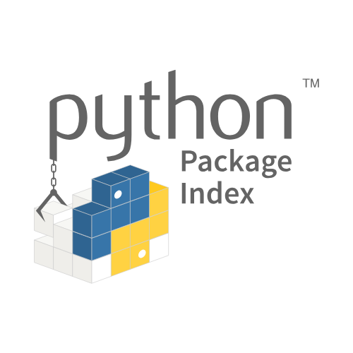

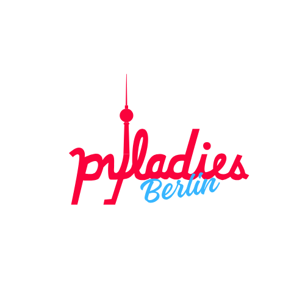
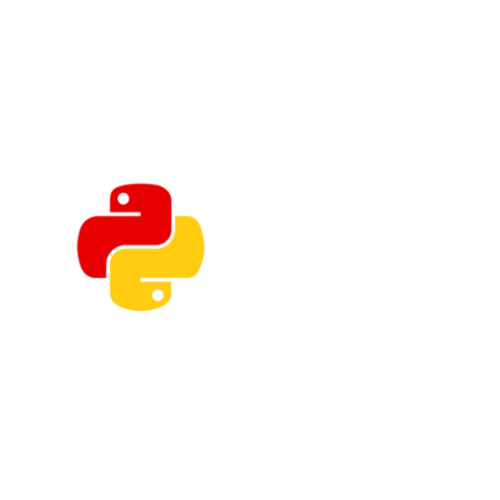
Python en Números
Stackoverflow Survey
Most popular technologies 2025 (link)
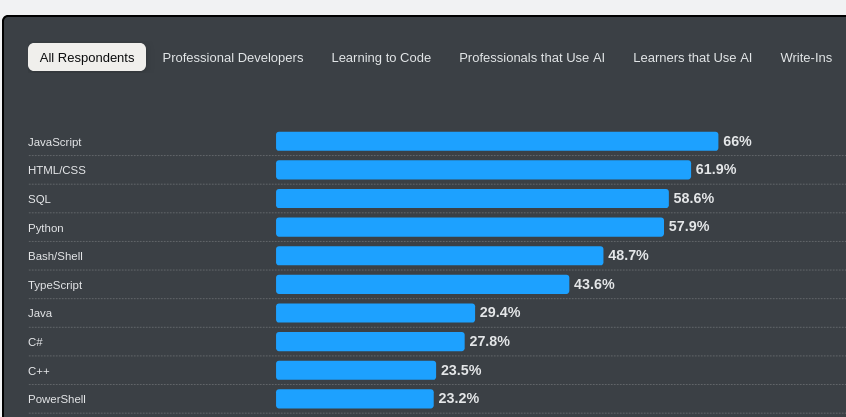
Jetbrains Survey
The state of Python 2025 by Jetbrains (link)
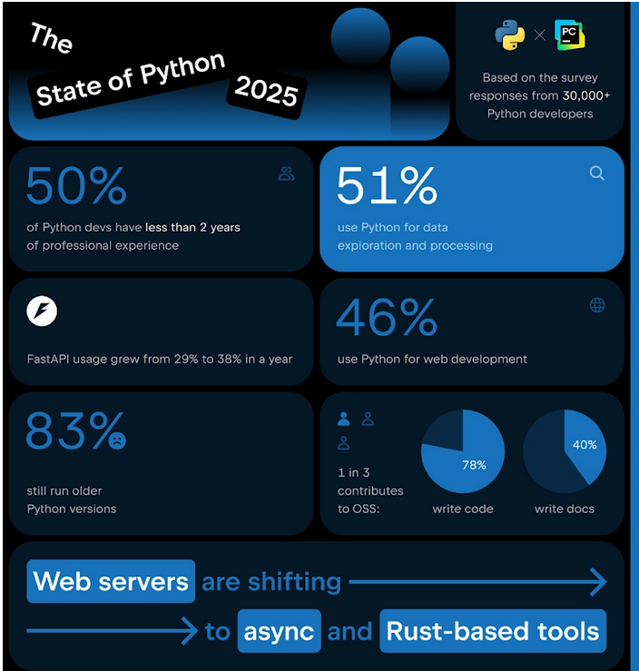
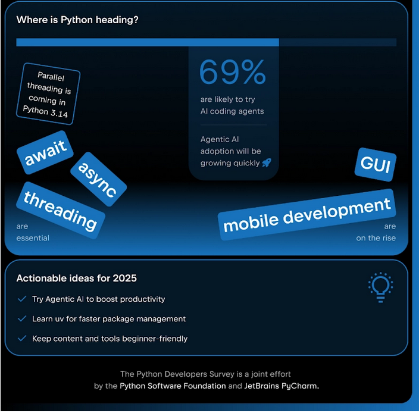
Github's Octoverse 2025
Top 10 programming languages on Github 2025 (link)
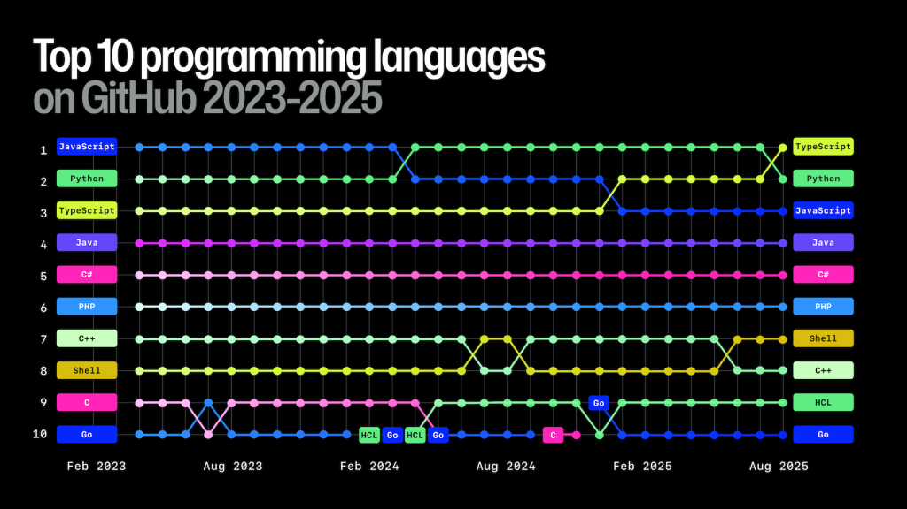
TIOBE index
March 2026 (link)
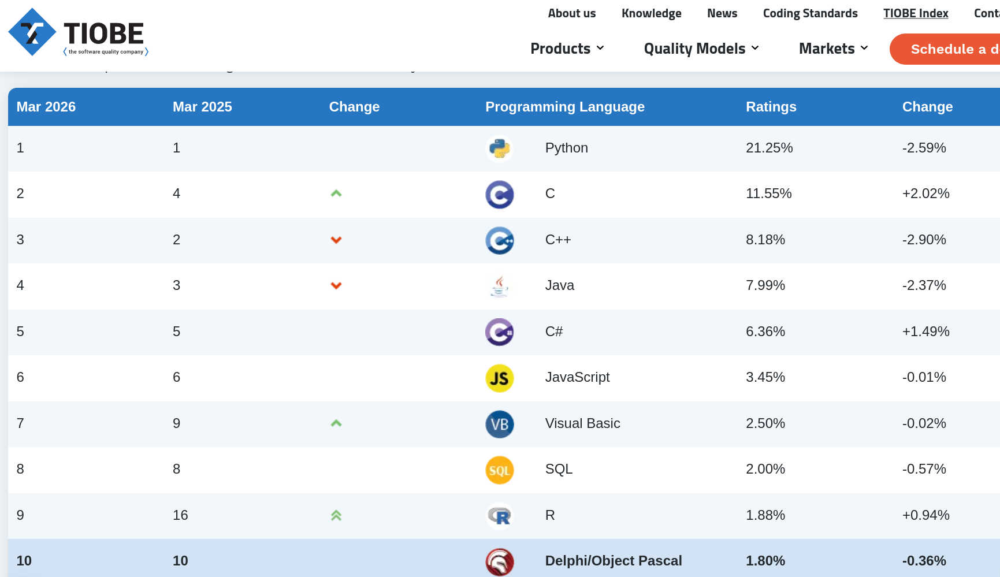
PyPI in 2025
A year in review (link)
- Más de 3.9 millones de nuevos archivos publicados
- Más de 130,000 nuevos proyectos creados
- 1.92 exabytes de data transferida
- 1 petabyte = 1 000 000 000 000 000 bytes
- 2.56 trillones de peticiones
- 81,000 peticiones por segundo en promedio
¿Qué ayudó a la
popularidad actual?
Pero...
Python vs otros lenguajes
¿Cuántos lenguajes de programación hay?
🤔
Los lenguajes evolucionan y se inspiran 🐍
HOW TO PRINT CELSIUS FROM a TO b:
PUT a, b IN lo, hi
IF lo > hi:
PUT hi, lo IN lo, hi \Swap hi and lo
FOR f IN {lo..hi}:
PUT (f-32)*5/9 IN c
WRITE f, "Fahrenheit =", 2 round c, "Celsius" /
ABC, Predecesor de Python
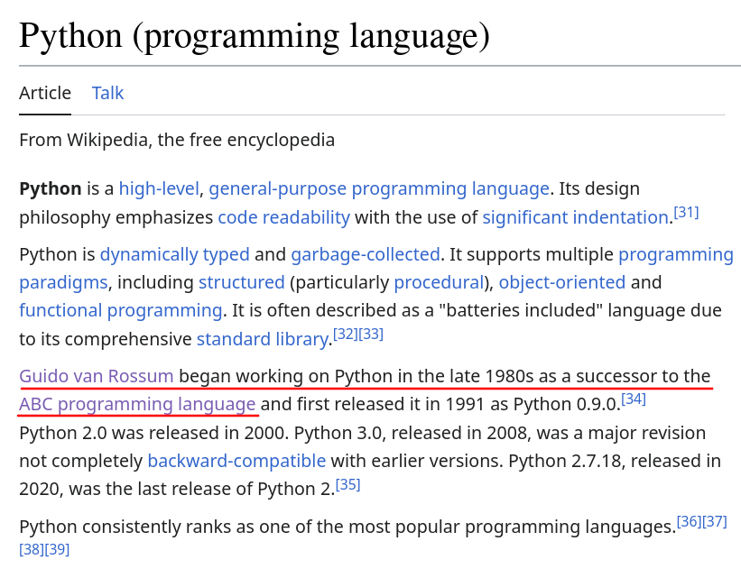
Nuestro lenguaje 🇨🇱
- "Cachar"
- to catch (Inglés)
- "Guagua"
- wawa (Quechua/Aymara)
- "Polola"
- piulliu (Mapuzugun)
- "Pichintún"
- püchintun (Mapuzugun)
- "Guata"
- huata (Mapuzugun)
- "Cahuín"
- kawiñ (Mapuzugun)
¿Se pueden comparar los lenguages de programación?
¡Python es lento!
¿Es Python lento?
¿Cuál Python?
⭐¿Tienes Interés en detalles de CPython?
El repo: github.com/python/cpythonConstruyendo tu propio Python
- Clona el repositorio
git clone https://github.com/python/cpython.git - Configúralo
# puedes seleccionar un directorio para construir e instalar cd cpython/ ./configure - Compílalo, y disfruta!
# Para utilizar 'X' procesos make -j X # ... ./python Python 3.11.0a0 (Aug 27 2021, 22:56:41) [GCC 11.1.0] on linux Type "help", "copyright", "credits" or "license" for more information. >>> print("Hola, Mundo!") "Hola, Mundo!"
Entonces...¿Es Lento?
- «Tomar sopa con un tenedor»
- Optimización prematura
- Interacción con otros lenguajes
- El desempeño sigue mejorando con cada release
Cambios en las nuevas versiones
- 3.11 - 10-60% más rápido que 3.10
- 3.12 - 📈 tokenize, asyncio, etc
- 3.13 - Free threaded, experimental JIT
- 3.14 - New interpreter (3-5%), JIT (10% lower to 20% faster)
- 3.15 - JIT mejorando (4-7% mejor)
¿Qué otros lenguajes debo aprender?
- ¡Depende!
- JavaScript/TypeScript para temas Web
- Rust para herramientas y backend
- C y C++ para compatibilidad con sistemas emebedded o frameworks complejos
- Zig o Gleam, si tienes tiempo libre
Interacción con otros lenguajes
(Language Bindings)
NumPy

Pandas
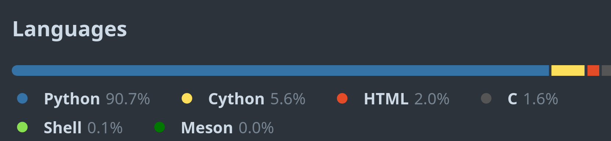
Scikit-Learn
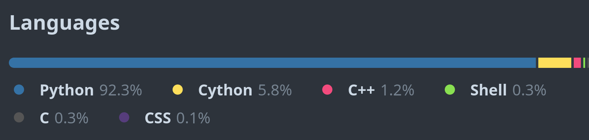
Tensorflow

PyTorch

Ruff

Este tema es bastante extenso
Python en el mundo laboral
Tipos de perfiles
Empresas que usan Python
En Chile (1/2)
- 🌱 NotCo - una IA propietaria (Giuseppe)
- 🛒 Cornershop - Soluciones para manipular datos, obtenerlos, etc (Python/Django)
- 💰 Fintual - manejo de portafolios de inversiones algoritmicamente (Python/Django/DS)
- 👥 Buk - plataforma HR (Data/Automation)
- 🏠 Houm - corredora de propiedades (Python/DS)
En Chile (2/2)
Chile emerged as the AI leader in the Latin American Artificial Intelligence Index Alcor, and Chilean software engineers rank 12th globally in tech skills and 39th in data science — with Python among their most popular programming languages. Alcor The pattern in Chile mirrors the rest of LatAm: Python dominates the ML/data layer. But NotCo is truly unique globally — it's one of the very few companies anywhere that uses ML not just to optimize a product, but as the literal product itself, designing food at a molecular level with an AI trained on hundreds of thousands of plant compounds.En Latinoamérica (1/2)
- 🛒 MercadoLibre / MercadoPago (Argentina) - Mayoritariamente herramientas, APIs y DS
- 💜 Nubank (Brazil) - Combinación con Clojure, ML/DS
- 🍔 iFood (Brazil) - infrastructura de ML, PySpark ETL pipelines.
- 🌍 Globo / Globoplay (Brazil) - plataforma de streaming (DS).
- 🚀 Rappi (Colombia) - división de DS, MLOps y herramientas
- ✈️ Despegar (Argentina) - DS y algunos servicios de backend
En Latinoamérica (2/2)
Notable pattern across LatAm companies: The region mirrors global trends — Python dominates the ML/data science layer even when core backend infrastructure is in Java, Go, or (in Nubank's unique case) Clojure. iFood and Rappi are the most publicly documented cases, with iFood having particularly detailed engineering content about their ML platform. Nubank is the most fascinating because they've openly blogged about the friction of having Python ML models in a Clojure-first ecosystem, which is a rare honest take on polyglot production challenges.En el mundo (1/3)
- 🎬 Netflix - Analisis de datos, backend, automatization, seguridad, herramientas, etc. Sistema de recomendaciones y traffic balancing.
- 📸 Instagram - Cinder para rendimiento, Django para el servicio web.
- 🎵 Spotify - backend y analisis de datos. Radio (auto-gen playlists) y Discover (recomendación de nuevo contenido)
- 🔍 Google - Search algorithms, youtube backend, internal systems, proyectos de IA/ML. También es parte de algunos servicios de sus servidores.
- 📦 Dropbox - Server y aplicación de escritorio fueron originalmente escritas en Python. Guido se unió a mejorar con verificación de tipado.
En el mundo (2/3)
- 🛒 Amazon - Search algorithms. Web applications, con django y flask. DS y sistemas de escalabilidad en general.
- 🚗 Uber - backend y procesamiento de datos. Pyro (computación distribuida) y pipelines de ML.
- 💬 Reddit - Migración de List a Python hace 20 años.
- 🖼️ Pinterest - núcleo de la aplicación, incluyendo varias herramientas de manejo de datos y comunicación.
- 🤖 Meta (Facebook) - Herramientas, analisis de datos, redes, automatización, etc.
En el mundo (3/3)
The pattern that emerges: Python tends to own the ML/recommendation layer, DevOps/automation, and data pipelines at most big companies, even when the core infrastructure uses faster compiled languages. Instagram is the notable outlier where Python is the primary language all the way through the stack.Fuera del mundo
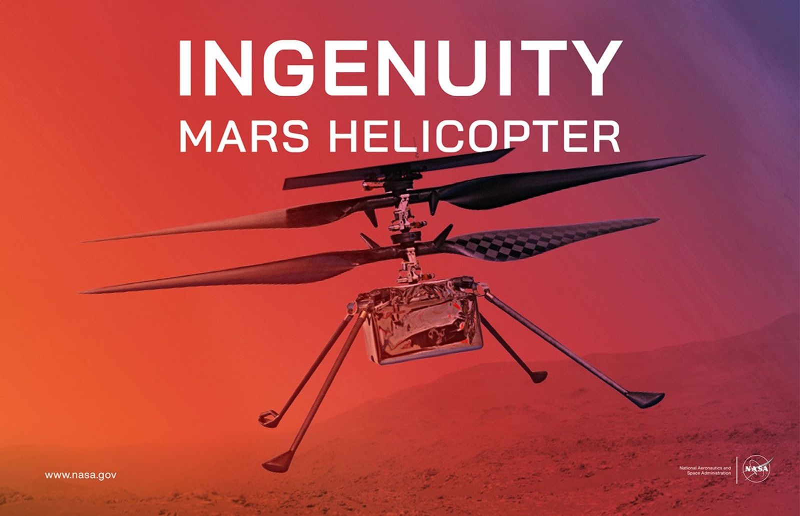
Instituciones que utilizan Python

¿Qué aprender con Python?*
Áreas de interés
- Ciencia y Analisis de datos
- Desarrollo e integración web
- Creación de herramientas línea de comando e interfaces gráficas
Módulos populares - DS/DA
Numpy, PyTorch, Tensorflow


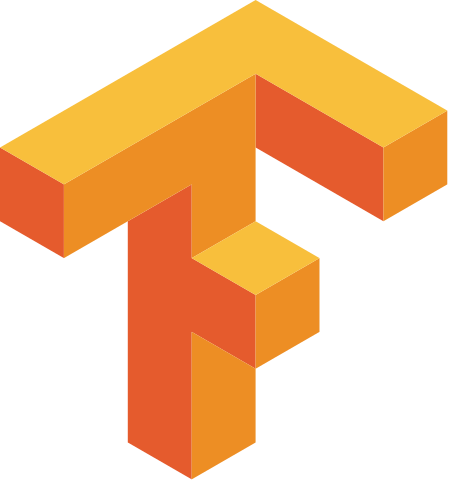
Módulos populares - Web
Flask, Django, FastAPI


Módulos populares - Tools/UI
Astral, BeeWare, Qt
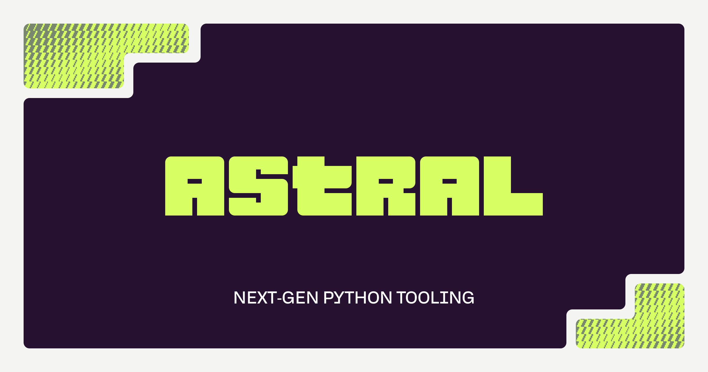

Python y su comunidad
Conferencias Internacionales (1/2)
Python Conference (PyCon) - pycon.org
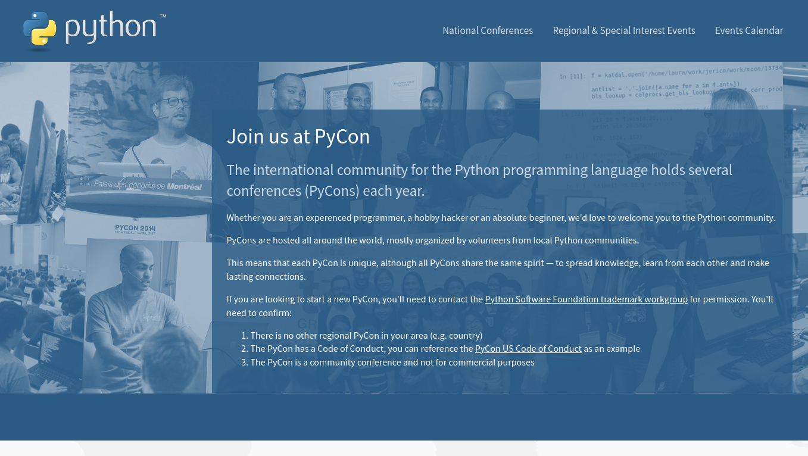
Conferencias Internacionales (2/2)
Micro Conference - python.pizza
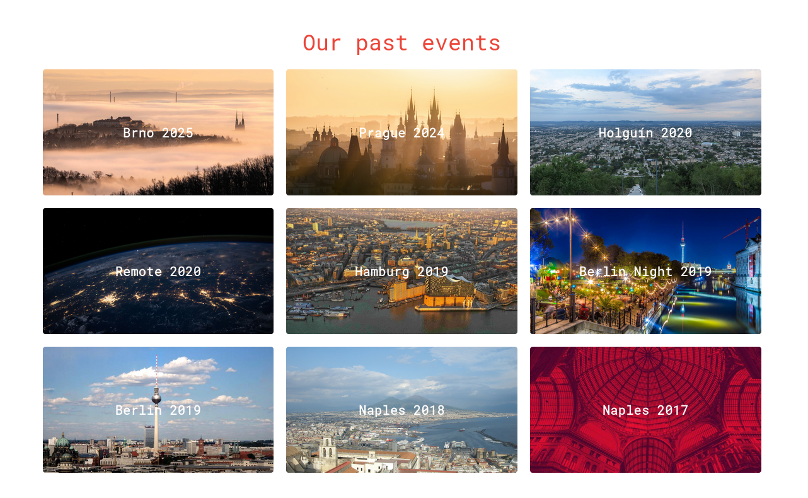
Python Chile - pythonchile.cl
Python en Español - hablemospython.dev
- Comunidad internacional de gente hispanoparlante
- Servidor Discord muy activo
- Eventos online y anuncios de actividades
El purismo tecnológico
no es la realidad
Necesitamos interacción muchas tecnologías
y Python es una muy buena solución para ello
Python en el mundo real: de la teoría a la práctica
Dr. Cristián Maureira-Fredes
Principal R&D Manager at The Qt Company
Vice Chair Elect at Python Software Foundation